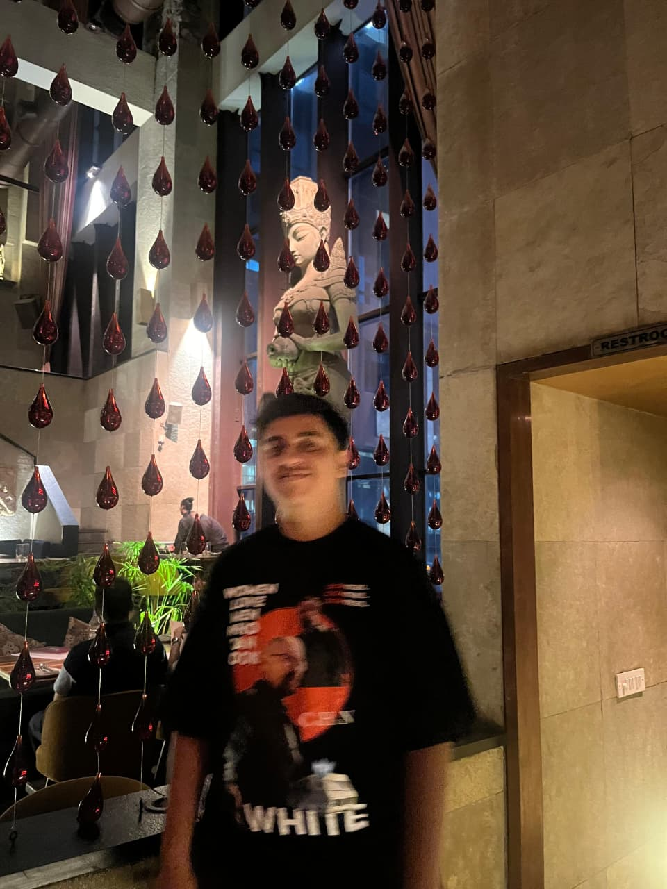

Apple Product Finder
Answer a few questions about how you work and it picks the Mac, iPhone, iPad, Apple Watch or AirPods that fits, with the reasons.
My name is Virat Sehgal. I am currently studying Computer Science and Engineering, learning new programming languages and frameworks.
I spent almost a year as a Culinary student in Bengaluru.

Answer a few questions about how you work and it picks the Mac, iPhone, iPad, Apple Watch or AirPods that fits, with the reasons.
Search any GitHub user and get a twenty-four second film of their profile, cut to the bar of a soundtrack synthesised for it.
A mix controlled by where your pointer is: loudest at the centre, silent at the edges, drawn as a halftone of its own volume.
A sixteen-pad sampler, two banks deep, with per-pad loops and every pad playable from the keyboard.
Additive synthesis you can see. Drag eight harmonic bars, watch the resultant wave redraw, and hear exactly that shape.
A finance manager that opens your bank’s own CSV or XLSX export: budgets, recurring bills and a spending trend, all in the browser.
The playground hand game, with the house rules as settings rather than arguments: rollover, splitting, revivals.
Philips WiZ bulbs tuned to the album art of whatever is playing on Spotify, spoken to over UDP on your own network.
A system-wide back button for iPhone without a jailbreak, built from AssistiveTouch, with somewhere to practise the swipe.
A tape measure drawn frame by frame on a canvas. Drag the blade out, let go and it snaps back, inches above and centimetres below.
A video shelf, and a music one beside it. One search runs across both catalogues; a theme switch, a saved account, notifications.
Ten options behind a sign-in, every record kept in a plain text file, and a terminal drawn at a fixed fifty-eight columns.